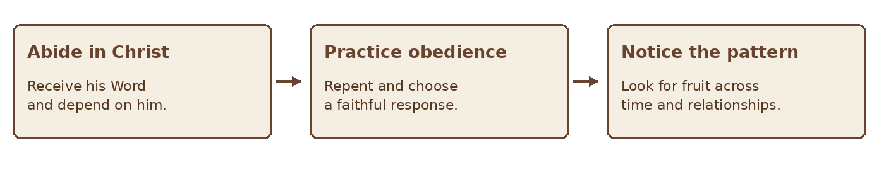

GIFTS OF THE HOLY SPIRIT · BIBLE STUDY
APPENDIX
The Fruit of the Spirit
“The fruit of the Spirit is love, joy, peace, patience, kindness, goodness, faithfulness, gentleness, self-control.” — Galatians 5:22–23
The gift studies ask what the Spirit may give believers for the good of others. This appendix asks what kind of people the Spirit forms. Paul’s list in Galatians 5:22–23 describes character expressed in a life led by the Spirit. A striking gift never replaces love, and the presence of a gift alone does not prove maturity. Read the list in its setting: Paul contrasts the works of the flesh with the fruit of the Spirit and calls believers to walk by the Spirit.
Scripture at a Glance
| Passage | Contribution to the appendix |
|---|---|
| Galatians 5:13–26 | Freedom serves love; the works of the flesh are contrasted with the fruit of the Spirit. |
| John 15:1–8 | Jesus uses the vine and branches to teach dependence on him for fruitfulness. |
| Romans 8:5–14 | Life according to the Spirit shapes the mind and conduct. |
| Colossians 3:12–17 | Compassion, kindness, humility, patience, forgiveness, and love are practiced in community. |
| 1 Corinthians 12:7; 13:1–13 | Gifts serve the common good, while love is indispensable. |
| Matthew 7:15–20 | Jesus directs attention to fruit when warning about false prophets. |
1 Fruit and Gifts Are Related but Distinct
In 1 Corinthians 12, Paul speaks of diverse gifts distributed among members of the body for the common good. In Galatians 5, he describes the fruit of a life shaped by the Spirit. Gifts differ from person to person; the character Paul describes is a direction of growth for believers generally. The singular word “fruit” introduces the whole list. It should not be turned into nine separate spiritual gifts.
Paul follows his discussion of gifts in 1 Corinthians 12 with chapter 13 on love. Even remarkable abilities are empty when exercised without love. This is why the fruit of the Spirit belongs beside the gift studies: it helps us ask how a gift is used, how people are treated, and whether a person remains teachable.
Figure 1 Character shapes the use of gifts
2 Read Galatians in Context
Galatians 5 does not present a scorecard for comparing Christians. Paul addresses freedom, the call to serve one another through love, and the conflict between the flesh and the Spirit. “Flesh” in this passage describes human life turned toward desires opposed to God; it should not be reduced to the physical body itself.
The listed works of the flesh include not only sexual immorality and drunkenness but also hostility, jealousy, anger, rivalry, and division. The fruit of the Spirit therefore has a communal dimension. It can be seen in patient relationships, truthful conduct, reconciliation, and self-restraint over time.
Figure 2 The direction of a Spirit led life in Galatians 5
3 The Nine Qualities
Galatians 5:22–23 is the central text for every quality below. The companion references show the same character being taught or practiced elsewhere in Scripture; they do not redefine Paul’s list.
| Quality | What it can look like | Companion Scripture |
|---|---|---|
| Love | Seeking another person’s good with truth and sacrifice. | John 13:34–35 |
| Joy | Rejoicing in the Lord amid changing circumstances. | Philippians 4:4 |
| Peace | Pursuing peace within the body of Christ. | Colossians 3:15 |
| Patience | Bearing with people instead of reacting in anger. | Ephesians 4:2 |
| Kindness | Showing practical mercy and tenderheartedness. | Ephesians 4:32 |
| Goodness | Choosing what is good, right, and true. | Ephesians 5:8–10 |
| Faithfulness | Remaining trustworthy in entrusted responsibilities. | Luke 16:10 |
| Gentleness | Responding with considerate strength. | Philippians 4:5 |
| Self-control | Practicing restraint rather than being ruled by impulse. | 2 Peter 1:5–6 |
These short descriptions are applications, not substitutes for reading each passage. The qualities belong together. For example, kindness without truth may fail to help; truth spoken without gentleness may wound unnecessarily.
4 How Fruit Grows
Jesus’ image in John 15:1–8 places fruitfulness in relationship to him: a branch does not bear fruit by itself. The image emphasizes dependence rather than self manufacture. Prayer, Scripture, worship, repentance, and life with the church are ordinary ways believers remain attentive to Christ and learn obedience.
Romans 8:5–14 describes a mind set on the Spirit and the Spirit’s help in putting sinful deeds to death. Growth involves God’s work and a believer’s response. It is often gradual. A single failure should be confessed and addressed, but it should not erase genuine growth; a single impressive act should not substitute for a sustained pattern.

Figure 3 A simple pattern for examining growth
5 Fruit as Part of Discernment
Jesus’ warning in Matthew 7:15–20 concerns false prophets and their fruit. Looking at fruit means examining a pattern of teaching and conduct, not guessing at someone’s motives from one uncomfortable moment. When a person claims a gift, ask whether its use is marked by love, truth, patience, gentleness, and accountability.
Fruit is one part of discernment, not an infallible shortcut. People can appear pleasant while teaching falsely, and a faithful correction may feel uncomfortable. Compare claims with Scripture, listen to those affected, and allow time to reveal patterns. Address concrete harm directly rather than using spiritual labels in place of evidence.
| Question | Why it matters |
|---|---|
| Is the message faithful to Scripture? | Character does not make false teaching true. |
| How are people treated? | A gift is meant for the common good. |
| Is correction welcomed? | Humility makes testing possible. |
| What pattern appears over time? | Fruit is more than one moment or mood. |
6 A Personal Reflection Practice
Choose one quality for focused prayer and practice this week while remembering that the Spirit forms the whole life. Write about a real situation rather than rating yourself or others.
| Prompt | Record |
|---|---|
| Which passage will I read? | Read Galatians 5:13–26 and one companion text in context. |
| Where was this quality needed? | Describe an actual interaction without excuses or exaggeration. |
| What did I do? | Name words and actions honestly. |
| What would faithfulness look like? | Choose a concrete, loving response. |
| Whom should I ask for help? | Invite prayer or appropriate accountability. |
| Prompt | Record |
|---|---|
| What changed with time? | Return to the entry and notice growth or needed repair. |